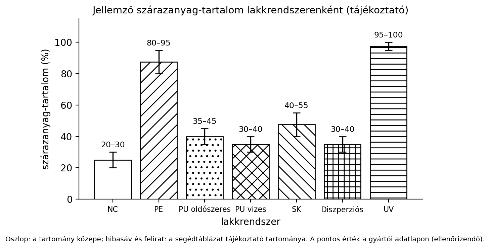

Egy megrendelő étkezőasztalt készíttet. Azt kérdezi: „Ne sárguljon be, bírja a forró tányért, és ne foltosodjon a víztől.” A műhelyben háromféle lakk van: gyorsan száradó NC-lakk, kétkomponensű PU-lakk és vizes diszperziós lakk. Ha rossz rendszert választasz, a felület egy év múlva repedezik, sárgul vagy lepereg. Ebben az alfejezetben a lakkok csoportosítását tanulod meg, hogy a termékhez és a műhelyhez illő rendszert válassz.
Képzelj el egy lakkozott fiókfronthoz tartozó műszaki adatlapot:
| Adatlap-mező | Példaérték (tájékoztató) |
|---|---|
| Termék | Kétkomponensű poliuretán fedőlakk |
| Keverési arány A : B | 100 : 20 tömegrész |
| Fazékidő 20 °C-on | 2 óra |
| Felhordás szórással | 120–140 g/m² nedves réteg |
| Pormentes | 30 perc |
| Átkenhető | 4 óra |
| Teljes kikeményedés | 7 nap |
Ezek a számok azt mondják meg, mennyit keverj, mennyi időd van felhasználni, mennyit hordj fel, és mikor dolgozhatsz tovább a felületen. A pontos értékeket mindig a gyártói műszaki adatlap adja meg.
Definíció. A lakk folyékony bevonatképző anyag, amely a felületen megszilárdulva vékony, összefüggő, védő és esztétikai réteget képez. A szaknyelvben a lakk áttetsző, a festék pigmentált bevonat, a lazúr pedig kevés pigmentet tartalmaz.
Definíció. A lakkrendszer az egymásra épülő, egymáshoz illesztett rétegek sora. Jellemzően három szerepű réteget különböztetünk meg:
A lakkrendszerben nem mindegy, hogy az alapozó és a fedőlakk ugyanabból a családból való-e. A rétegeknek kémiailag illeszkedniük kell, különben lepereg a bevonat.
A folyékony felületkezelő anyag fő összetevői:
Definíció. A VOC (illékony szerves vegyületek) a lakk felhordásakor és száradásakor a levegőbe jutó szerves oldószerek csoportja. A VOC-tartalmat jellemzően g/l-ben adják meg. A vizes lakkok VOC-tartalma lényegesen kisebb, mint az oldószeres lakkoké.
Definíció. A szárazanyag-tartalom a lakkban lévő, a száradás után is megmaradó bevonatképző anyagok tömegszázaléka.
Képletben:
ahol:
Példa. Ha 1,0 kg folyékony lakkból 0,35 kg megszáradt film marad, akkor a szárazanyag-tartalom:
A magas szárazanyag-tartalom azt jelenti, hogy kevesebb oldószer párolog el, így azonos felhordási tömegnél vastagabb, tartósabb film képződhet.
A faipari lakkokat a kötőanyag és a kötésmód szerint csoportosítjuk. A kötés lehet fizikai száradás (oldószer elpárolgás), kémiai térhálósodás (edző, katalizátor) vagy sugárzásos keményedés (UV).
A kötőanyag nitrocellulóz gyanta, az oldószer erős szerves oldószer. A film fizikai száradással, az oldószer elpárolgásával képződik.
A kötőanyag telítetlen poliészter gyanta, amelyet reaktív hígítóként sztirol tesz feldolgozhatóvá; a sztirol a térhálósodáskor beépül a filmbe, ezért nagy a szárazanyag-tartalom. A lakhoz katalizátort (peroxidot) kevernek, és a film kémiai térhálósodással keményedik. A régebbi rendszerekben paraffin/viasz is van, amely a levegőt elzárja a felszínen.
A kötőanyag poliuretán gyanta. Lehet egykomponensű (1K) vagy kétkomponensű (2K). A kétkomponensű formánál az A komponenshez B edzőt keverünk, és a film kémiai térhálósodással keményedik.
A kötőanyag savval térhálósított aminogyanta (karbamid- vagy melamin-formaldehid, alkiddal kombinálva). A film kémiai térhálósodással, savas edző hatására keményedik.
A kötőanyag polimer diszperzió (például akril vagy poliuretán/akril), a hordozóközeg víz. A film a víz elpárolgása és a polimer részecskék összeolvadása során képződik.
Az UV-lakk akrilátgyanták és fotoiniciátorok keveréke. UV-fény hatására nagyon gyorsan, másodpercek alatt keményedik.
A felület fényességét 60°-os fényességmérővel mérik, az eredményt GU (gloss unit) egységben adják meg. A tájékoztató sávok:
A matt lakkok mattító adalékot tartalmaznak. A matt felület jobban elrejti a karcokat, de a mélyebb matt réteg gyakran kevésbé dörzsölhető, mint a fényes. A fényesség pontosan az adatlapon és a vizsgálati jegyzőkönyvben szerepel.
A rendszer akkor működik, ha a rétegek szerepe és sorrendje helyes.
Nem mindegy, hogy a pórustöltő réteg alá milyen alapozó kerül. A gyártó a termék adatlapján rendszerben írja elő: „alapozó X, töltő Y, fedő Z”.
A lakkok kiválasztása nem egyetlen termék kiválasztása, hanem rendszer kiválasztása. Ugyanannak a családnak az alapozóját és fedőlakkját használd, a gyártó előírása szerint. Ha például NC-lakkra PU fedőlakkot viszel fel, a réteg lepereghet, mert a fedőlakk oldószere meglágyítja az alatta lévő gyenge réteget.
Szabály. A felületkezelő lakkrendszert a gyártó műszaki adatlapja szerint, az előírt alapozó–töltő–fedő kombinációval kell alkalmazni. A keverési arány, a fazékidő, a felhordási mennyiség és a száradási idő a termékre és a műhely hőmérsékletére vonatkozik. Minden értéket a gyártói adatlapon kell ellenőrizni.
Továbbvitt eredmény. A lakkrendszer-választás és az adatlap-olvasás alapját képezi a Lazúrok, olajok, viaszok, bio felületkezelők és a politúrozás alfejezetben tárgyalt alternatív bevonatok összehasonlításának, a Felületbevonások: fóliázás és laminálás alfejezetben tárgyalt gyári bevonatoknak, valamint a Felhordás gépei: szórópisztolyok és szórástechnológiák, mártás, hengerlés, öntés alfejezetben tárgyalt felhordási technológiáknak. A rendszerben gondolkodva később tudod majd a felhordási mennyiséget átszámolni anyagszükségletté, és a hibát a rétegszerkezetben azonosítani.
| Lakkrendszer | Szárazanyag (tájékoztató, %) | Keménység/kopás | Vegyi ellenállás | Rugalmasság | Sárgulás | VOC | Jellemző felhasználás |
|---|---|---|---|---|---|---|---|
| NC | 20–30 | közepes | gyenge | jó | erős | magas | gyors belső munkák, hangszer |
| PE | 80–95 | nagyon kemény | jó | rideg | erős | magas | fényes asztallap, zongora |
| PU oldószeres | 35–45 | nagyon jó | kiváló | jó | változó | magas | étkezőasztal, konyhabútor |
| PU vizes | 30–40 | nagyon jó | jó | jó | alacsony | kicsi | bútor, ahol alacsonyabb VOC kell |
| SK | 40–55 | kemény | jó | rideg | erős | magas | régebbi bútoripar, ma korlátozott |
| Diszperziós | 30–40 | jó | közepes-jó | jó | alacsony | kicsi | gyerekbútor, belső bútor |
| UV | 95–100 | nagyon kemény | kiváló | kevésbé rugalmas | alacsony | minimális | sík lapok, ipari sor |
A táblázat értékei tájékoztató tartományok, terméktől függenek. A pontos érték a gyártó műszaki adatlapjáról olvasható le.

Adott:
Keresett: szárazanyag-tartalom.
Képlet és behelyettesítés:
Eredmény: 35%.
Ellenőrzés: 0,42 / 1,2 = 0,35, tehát a film a folyékony tömeg 35%-a.
Adott:
Keresett: a bekeverendő lakk tömege, valamint az A és B komponens tömege, ha a keverési arány A : B = 100 : 20.
Képlet:
Behelyettesítve:
Az arány 100 : 20 összesen 120 rész. Egy rész tömege:
A komponens: 100 rész = 440 g, B komponens: 20 rész = 88 g.
Ellenőrzés: 440 g + 88 g = 528 g.
Megjegyzés. A ráhagyás egyszerű százalékos növelés. Pontosabb számításnál a veszteséget a felületre ténylegesen felhordott anyagból számoljuk, de a gyakorlatban a ráhagyásos szorzás is használható. A pontos számítást a Felületkezelési hibák és a felületkezelési számítások alfejezetben tanulod meg.
Szabvány. A lakkok forgalomba hozatalát és veszélyességük közlését az EU CLP-rendelete (1272/2008/EK) és a REACH-rendelet szabályozza. A termékhez biztonsági adatlap és műszaki adatlap tartozik. A VOC-kibocsátást uniós és hazai előírások korlátozzák; a pontos termékkategória-határértékeket és a hatályos rendelet számát a kiadás előtt ellenőrizni kell. A bútorfelületek műszaki teljesítményét szabványos vizsgálatokkal minősítik (ellenőrizendő: karcállóság, vegyszerállóság, nedves dörzsölhetőség, fényességmérés jelzetei). Gyerekbútorhoz alacsony kibocsátású, az adott célra alkalmas rendszert válassz; az alkalmasságot tanúsítvány vagy gyártói nyilatkozat igazolja.
Egészségvédelem és biztonság. A lakkok szerves oldószer-gőze, a por és az edzők bőr- és szemizgató, egyes anyagok érzékenyítő hatásúak. A keverést, felhordást és szárítást szellőzés mellett vagy elszívott szórófülkében végezd. Használj a biztonsági adatlapon előírt védőkesztyűt, védőszemüveget és légzésvédőt; szóráskor a szűrő típusát a biztonsági adatlap határozza meg (ellenőrizendő: pl. A/P2 kombinált szűrő). Tilos. nyílt láng vagy szikraforrás oldószeres lakk közelében; oldószeres rongyot összegyűrve tárolni; a maradékot lefolyóba önteni. A hulladék külön gyűjtendő. Ne dohányozz a lakkfeldolgozás helyén. A VOC-tartalom és a veszélyességi besorolás a biztonsági adatlapból olvasható ki.
Rendszerspecifikus veszélyek. PE-lakk: a peroxidot és a gyorsítót soha ne keverd közvetlenül egymással (robbanásveszély); mindkettőt külön, a gyártó sorrendjében keverd a gyantába, a peroxidot hőtől távol tárold. 2K PU: az edző diizocianátot tartalmazhat, amely légúti és bőrallergiát okoz; használatához az uniós előírás szerinti képzés kellhet (ellenőrizendő: REACH XVII. melléklet 74. bejegyzés, pontos feltételek). UV-lakk: az akrilátgyanta bőrérzékenyítő; az UV-szárító burkolatát üzem közben ne nyisd, a sugárzás szem- és bőrkárosító.
A felületkezelő lakkrendszer minőségét a felhordás után és a vásárlói átadás előtt is ellenőrizni kell.
| Ellenőrzés | Módszer | Tájékoztató követelmény |
|---|---|---|
| Szín, fény | mintadarabbal összehasonlítás | az elfogadott színmintának megfelelő |
| Rétegvastagság | felületi mérőeszköz, száraz réteg | gyártói előírás (jellemzően 60–120 µm) |
| Tapadás | ragasztószalagos letépés (gyártói előírás szerint) | nincs kihúzódás, lepergés |
| Por, zárvány | szemrevételezés | nem maradhat szemcsés szennyeződés |
| Sárgulás | fehér próbadarab 24 h után | a fehér felület nem sárgulhat |
A tűrések tájékoztató jellegűek; a termék műszaki adatlapja és a vevővel egyeztetett mintadarab a mérvadó.
Sárgulás fehér felületen. Oka: NC-, SK- vagy aromás PU-rendszer, vagy UV-stabilizátor nélküli fedőlakk. Helyes: alifás PU, megfelelő vizes rendszer, vagy világos felületre alkalmas UV-lakk.
Rétegek közötti lepergés. Oka: nem illő alapozó/fedő kombináció, rossz csiszolás vagy nedves, olajos felület. Helyes: a gyártó által rendszerbe állított rétegek, köztes csiszolás.
Buborékok a lakkban. Oka: túl vastag réteg, nem odavaló hígító, túl magas hőmérséklet vagy nem megfelelő szóróbeállítás. Helyes: előírt rétegvastagság, hígítás az adatlap szerint.
Fazékidő túllépése. Oka: a bekevert PU-, PE- vagy SK-anyagot már sűrűsödve hordják fel. Helyes: annyit keverni, amennyi a fazékidőn belül felhordható.
Fehéres, tejesködös felület. Oka: magas páratartalom, túl vastag réteg, vagy nem megfelelő szellőzés. Helyes: a gyártó által megadott hőmérséklet és páratartalom betartása.
Egy asztalosműhelyben egy család konyhafrontját készítették. A műhelyben korábban NC-lakkot használtak, mert gyorsan száradt és könnyű volt javítani. A megrendelő szerint a fehér konyhafront egy év alatt megsárgult, és a zsírtól foltos lett. A hiba oka az volt, hogy az NC-lakk sárgul, és a konyhai zsír, víz és vegyszer gyengíti a filmet. A megoldás: a felületet alaposan átcsiszolták, majd a gyártó előírása szerint izoláló alapozót és kétkomponensű PU fedőlakkot vittek fel. A tanulság: a lakkot a használati igénybevétel, nem a műhely kényelme szerint kell kiválasztani.
1. feladat (A) Sorolj fel három lakkrendszert, és mondd meg, melyik mire jellemző.
2. feladat (A) Írd le a szárazanyag-tartalom képletét, és magyarázd el a benne szereplő mennyiségeket.
3. feladat (B) Egy műhelyben 1,5 m² ajtólapot kell fedőlakkozni. A fajlagos felhordás 120 g/m², a rétegszám 2, a ráhagyás 10%. Mennyi keveréket kell bekeverni?
4. feladat (B) Egy PU-lakk keverési aránya A : B = 100 : 25. Ha 500 g keverékre van szükség, mennyi A és B komponenst kell kimérni?
5. feladat (C) Egy fehér konyhafrontot NC-lakkal fedtek, és egy év alatt megsárgult. Hogyan javítsd ki? Milyen rendszerrel fesd át, és miért?
6. feladat (D) Tervezz lakkrendszert egy gyerekjáték-tároló ládához. Válaszd ki a lakkrendszert, add meg a rétegsort, és sorold fel, mit ellenőrzöl az adatlapon és a biztonsági adatlapon.
Önellenőrzés – válaszok
1. feladat megoldása
Például: NC-lakk – gyors belső munka; PU-lakk – étkezőasztal,
konyhabútor; diszperziós lakk – gyerekbútor. A felsorolás akkor jó, ha a
felhasználás megfelel a tulajdonságnak.
2. feladat megoldása
A szárazanyag-tartalom:
Ahol a megszáradt film tömege, a folyékony lakk tömege.
3. feladat megoldása
Képlet:
.
Behelyettesítve:
.
Tehát 396 g keveréket kell bekeverni.
4. feladat megoldása
Összesen 100 + 25 = 125 rész. Egy rész: 500 / 125 = 4 g.
A komponens: 100 × 4 g = 400 g.
B komponens: 25 × 4 g = 100 g.
Ellenőrzés: 400 g + 100 g = 500 g.
5. feladat megoldása
A sárgult NC-felületet először le kell csiszolni, majd izoláló
alapozóval át kell vonni, hogy a régi réteg ne színezze át az újat.
Ezután kétkomponensű PU fedőlakkot kell felvinni, mert kemény,
vegyszerálló és kevésbé sárgul. A régi NC-lakkot nem szabad csak
átfedni, mert az új fedőlakk oldószere meglágyíthatja, és lepereg.
6. feladat megoldása
Gyerekjáték-tároló ládához vizes diszperziós lakkrendszer javasolt.
Rétegsor: vizes alapozó, vizes töltőalapozó, vizes fedőlakk. Az
adatlapon ellenőrizni kell: keverési arány (ha 2K), hígítás, felhordási
mennyiség, száradási idő, rétegvastagság, fényesség. A biztonsági
adatlapon ellenőrizni kell: VOC-tartalom, veszélyességi besorolás,
egyéni védőeszköz, hulladékkezelés. Az alkalmasságot gyártói
tanúsítással kell igazolni: az adatlapon a játékbiztonsági megfelelést
(pl. MSZ EN 71-3, ellenőrizendő: hatályos kiadás) és a nyálállóságot
(ellenőrizendő) keressük.
A faipari lakkokat a kötőanyag és a kötésmód szerint csoportosítjuk: NC, PE, PU, SK, diszperziós és UV. A lakkrendszer egymásra épülő rétegekből áll: alapozó, töltőalapozó, fedőlakk. Az NC gyors, de sárgul és magas VOC-tartalmú; a PE nagyon kemény, de rideg; a PU kemény és rugalmas, jó vegyi ellenállású; az SK formaldehid-kibocsátással jár; a diszperziós alacsony VOC-tartalmú, gyerekbútorhoz jó; az UV gyors ipari rendszer. A szárazanyag-tartalom a megszáradt film tömegszázaléka: . A felhordási anyagszükséglet , ahol a ráhagyást is hozzáadjuk. A keverési arányból az A és B komponens tömege aránypárral számítható. Mindig a gyártói műszaki adatlap és a biztonsági adatlap a mérvadó. Továbbvitt eredmény: a lakkrendszer-választást és az adatlap-olvasást használjuk a Lazúrok, olajok, viaszok, bio felületkezelők és a politúrozás, a Felületbevonások: fóliázás és laminálás és a Felhordás gépei: szórópisztolyok és szórástechnológiák, mártás, hengerlés, öntés alfejezetekben.